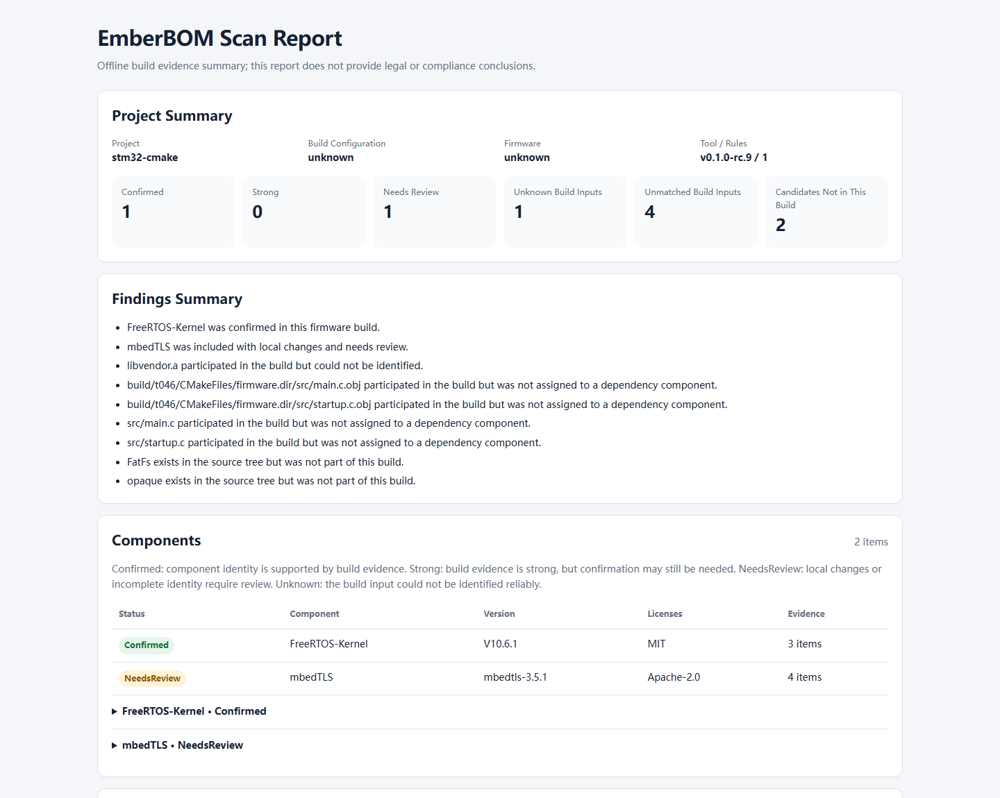

Reads build participation
Uses compile_commands.json and the GNU linker map instead of assuming every library in the source tree reached the firmware.
Offline firmware component inventory
EmberBOM reads real compiler and linker evidence from supported STM32 builds, identifies included third-party components, and exports a reviewable CycloneDX 1.6 SBOM.
No card. Windows x64 and Linux x64. Evaluation use is governed by the license notice.
Built for review, not theatre
Uses compile_commands.json and the GNU linker map instead of assuming every library in the source tree reached the firmware.
Separates confirmed components, items needing review, unknown linked inputs, and source-tree candidates that were not built.
Produces scan JSON, a CycloneDX 1.6 SBOM, a single-file HTML report, and an optional review YAML overlay.
Real fixture output
These files were generated by EmberBOM v0.1.0-rc.9 from the STM32 fixture used in release acceptance. They are not hand-written mockups and contain no customer project data.

Initial supported scope
compile_commands.json is availableCurrent evaluation release
Use the free evaluation only after every compatibility item above is true. The release was built for Windows x64 and Linux x64, checked in CI, and accepted against the release fixture.
Windows x64
Download ZIPc6a5be2d63a02cbbfd483862db8946c7b91a88d123aad364f7d716a1bb4cab49
Linux x64
Download tar.gz0c9e324eb098865649edbdfd2644170cb4c25ebd234b4b1394a9d841b5ba9c50
A checksum confirms the downloaded bytes; it does not expand EmberBOM's supported scope. The evaluation lasts fourteen consecutive days from first use.
Ten-minute path
Generate compile commands and a GNU linker map from the project you are authorized to scan.
Point the CLI at the project, build directory, linker map, firmware, and a separate output directory.
Read confirmed, review-required, unknown, and excluded findings before sharing the exported SBOM.
Founding price
The purchase is a self-service software license, not consulting or project analysis.
Founding Team License
$99 USD · one-time
One-time purchase. Taxes may apply.
Sandbox/Test Mode: this checkout takes no real payment.
Live Paddle checkout will open after seller-account approval. No payment is accepted by email.
Important answers
No. It inventories component evidence and exports an SBOM. It does not provide vulnerability data or claim that firmware is secure.
No. The CLI runs locally, has no automatic telemetry, and writes outputs only to the directory you specify.
It includes documentation and access to generally released corrections during the update period. It does not include project inspection, custom configuration, consulting, or a response-time commitment.
Yes. Your organization may use and share the reports and SBOMs it generates, subject to rights and restrictions that apply to its own project and third-party content.